\(\newcommand{\bSigma}{\boldsymbol{\Sigma}}\) \(\newcommand{\bmu}{\boldsymbol{\mu}}\)
4.6. More advanced material: Weyl’s inequality; image segmentation#
In this section, we cover some more advanced material.
4.6.1. Weyl’s inequality#
We prove an inequality on the sensitivity of eigenvalues which is useful in certain applications.
For a symmetric matrix \(C \in \mathbb{R}^{d \times d}\), we let \(\lambda_j(C)\), \(j=1, \ldots, d\), be the eigenvalues of \(C\) in non-increasing order with corresponding orthonormal eigenvectors \(\mathbf{v}_j\), \(j=1, \ldots, d\). The following lemma is one version of what is known as Weyl’s Inequality.
LEMMA (Weyl) Let \(A \in \mathbb{R}^{d \times d}\) and \(B \in \mathbb{R}^{d \times d}\) be symmetric matrices. Then, for all \(j=1, \ldots, d\),
where \(\|C\|_2\) is the induced \(2\)-norm of \(C\). \(\flat\)
Proof idea: We use the extremal characterization of the eigenvalues together with a dimension argument.
Proof: For a symmetric matrix \(C \in \mathbb{R}^{d \times d}\), define the subspaces
where \(\mathbf{v}_1,\ldots,\mathbf{v}_d\) form an orthonormal basis of eigenvectors of \(C\). Let \(H = B - A\). We prove only the upper bound. The other direction follows from interchanging the roles of \(A\) and \(B\). Because
it it can be shown (Try it!) that
Hence the \(\mathcal{V}_j(B) \cap \mathcal{W}_{d-j+1}(A)\) is non-empty. Let \(\mathbf{v}\) be a unit vector in that intersection.
By Courant-Fischer,
Moreover, by Cauchy-Schwarz, since \(\|\mathbf{v}\|=1\)
which proves the claim. \(\square\)
4.6.2. Image segmentation#
We give a different, more involved application of the ideas developed in this topic to image segmentation. Let us quote Wikipedia:
In computer vision, image segmentation is the process of partitioning a digital image into multiple segments (sets of pixels, also known as image objects). The goal of segmentation is to simplify and/or change the representation of an image into something that is more meaningful and easier to analyze. Image segmentation is typically used to locate objects and boundaries (lines, curves, etc.) in images. More precisely, image segmentation is the process of assigning a label to every pixel in an image such that pixels with the same label share certain characteristics.
Throughout, we will use the scikit-image library for processing images.
from skimage import io, segmentation, color
from skimage import graph
from sklearn.cluster import KMeans
As an example, here is a picture of cell nuclei taken through optical microscopy as part of some medical experiment. It is taken from here. Here we used the function skimage.io.imread to load an image from file.
img = io.imread('cell-nuclei.png')
fig, ax = plt.subplots(figsize=(6, 6))
ax.imshow(img)
plt.show()
Suppose that, as part of this experiment, we have a large number of such images and need to keep track of the cell nuclei in some way (maybe count how many there are, or track them from frame to frame). A natural pre-processing step is to identify the cell nuclei in the image. We use image segmentation for this purpose.
We will come back to the example below. Let us start with some further examples.
We will first work with the following map of Wisconsin regions.
img = io.imread('wisconsin-regions.png')
fig, ax = plt.subplots(figsize=(6, 6))
ax.imshow(img)
plt.show()
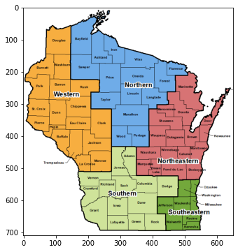
A color image such as this one is encoded as a \(3\)-dimensional array (or tensor), meaning that it is an array with \(3\) indices (unlike matrices which have only two indices).
img.shape
(709, 652, 3)
The first two indices capture the position of a pixel. The third index capture the RGB color model. Put differently, each pixel in the image has three numbers (between 0 and 255) attached to it that encodes its color.
For instance, at position \((300,400)\) the RGB color is:
img[300,400,:]
array([111, 172, 232], dtype=uint8)
plt.imshow(np.reshape(img[300,400,:],(1,1,3)))
plt.show()
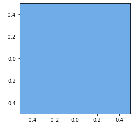
To perform image segmentation using the spectral graph theory we have developed, we transform our image into a graph.
The first step is to coarsen the image by creating super-pixels, or regions of pixels that are close and have similar color. For this purpose, we will use skimage.segmentation.slic, which in essence uses \(k\)-means clustering on the color space to identify blobs of pixels that are in close proximity and have similar colors. It takes as imput a number of super-pixels desired (n_segments), a compactness parameter (compactness) and a smoothing parameter (sigma). The output is a label assignment for each pixel in the form of a \(2\)-dimensional array.
On the choice of the parameter compactness via scikit-image:
Balances color proximity and space proximity. Higher values give more weight to space proximity, making superpixel shapes more square/cubic. This parameter depends strongly on image contrast and on the shapes of objects in the image. We recommend exploring possible values on a log scale, e.g., 0.01, 0.1, 1, 10, 100, before refining around a chosen value.
The parameter sigma controls the level of blurring applied to the image as a pre-processing step. In practice, experimentation is required to choose good parameters.
labels1 = segmentation.slic(img,
compactness=25,
n_segments=100,
sigma=2.,
start_label=0)
print(labels1)
[[ 0 0 0 ... 8 8 8]
[ 0 0 0 ... 8 8 8]
[ 0 0 0 ... 8 8 8]
...
[77 77 77 ... 79 79 79]
[77 77 77 ... 79 79 79]
[77 77 77 ... 79 79 79]]
A neat way to vizualize the super-pixels is to use the function skimage.color.label2rgb which takes as input an image and an array of labels. In the mode kind='avg', it outputs a new image where the color of each pixel is replaced with the average color of its label (that is, the average of the RGB color over all pixels with the same label). As they say, an image is worth a thousand words - let’s just see what it does.
out1 = color.label2rgb(labels1, img/255, kind='avg', bg_label=0)
out1.shape
(709, 652, 3)
fig, ax = plt.subplots(figsize=(6, 6))
ax.imshow(out1)
plt.show()
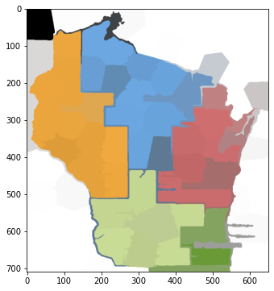
Recall that our goal is to turn our original image into a graph. After the first step of creating super-pixels, the second step is to form a graph whose nodes are the super-pixels. Edges are added between adjacent super-pixels and a weight is given to each edge which reflects the difference in mean color between the two.
We use skimage.graph.rag_mean_color. In mode similarity, it uses the following weight formula (quoting the documentation):
The weight between two adjacent regions is exp(-d^2/sigma) where d=|c1−c2|, where c1 and c2 are the mean colors of the two regions. It represents how similar two regions are.
The output, which is known as a region adjacency graph (RAG), is a NetworkX graph and can be manipulated using that package.
g = graph.rag_mean_color(img, labels1, mode='similarity')
nx.draw(g, pos=nx.spring_layout(g))
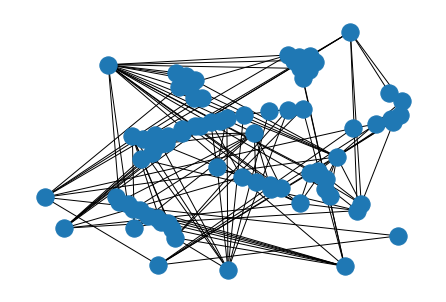
scikit-image also provides a more effective way of vizualizing a RAG, using the function skimage.future.graph.show_rag. Here the graph is super-imposed on the image and the edge weights are depicted by their color.
fig, ax = plt.subplots(nrows=1, figsize=(6, 8))
lc = graph.show_rag(labels1, g, img, ax=ax)
fig.colorbar(lc, fraction=0.05, ax=ax)
plt.show()
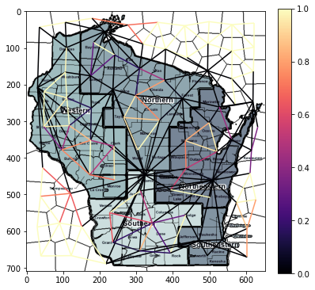
We can apply the spectral clustering techniques we have developed in this chapter. Next we compute a spectral decomposition of the weighted Laplacian and plot the eigenvalues.
L = nx.laplacian_matrix(g).toarray()
print(L)
[[ 9.93627574e-01 -9.93627545e-01 0.00000000e+00 ... 0.00000000e+00
0.00000000e+00 0.00000000e+00]
[-9.93627545e-01 1.98331432e+00 -9.89686777e-01 ... 0.00000000e+00
0.00000000e+00 0.00000000e+00]
[ 0.00000000e+00 -9.89686777e-01 1.72084919e+00 ... 0.00000000e+00
0.00000000e+00 0.00000000e+00]
...
[ 0.00000000e+00 0.00000000e+00 0.00000000e+00 ... 4.03242708e-05
0.00000000e+00 0.00000000e+00]
[ 0.00000000e+00 0.00000000e+00 0.00000000e+00 ... 0.00000000e+00
7.93893423e-01 0.00000000e+00]
[ 0.00000000e+00 0.00000000e+00 0.00000000e+00 ... 0.00000000e+00
0.00000000e+00 1.99992197e+00]]
w, v = LA.eigh(L)
plt.plot(np.sort(w))
plt.show()
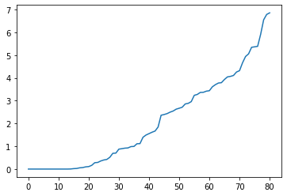
From the theory, this suggests that there are roughly 15 components in this graph. We project to \(15\) dimensions and apply \(k\)-means clustering to find segments. Rather than using our own implementation, we use sklearn.cluster.KMeans from the scikit-learn library. That implementation uses the \(k\)-means\(++\) initialization, which is particularly effective in practice. A label assignment for each node can be accessed using labels_.
ndims = 15 # number of dimensions to project to
nsegs = 10 # number of segments
top = np.argsort(w)[1:ndims]
topvecs = v[:,top]
topvals = w[top]
kmeans = KMeans(n_clusters=nsegs, random_state=12345).fit(topvecs)
assign_seg = kmeans.labels_
print(assign_seg)
[3 3 3 3 3 3 3 3 3 0 2 3 3 0 3 3 3 2 4 3 2 3 2 0 3 2 3 2 0 2 2 3 0 5 3 0 2
2 0 5 3 0 5 5 0 0 2 0 5 3 3 7 0 5 3 5 0 8 7 5 7 3 3 5 8 8 8 7 7 1 7 6 3 8
8 8 7 7 9 3 7]
To vizualize the segmentation, we assign to each segment (i.e., collection of super-pixels) a random color. This can be done using skimage.color.label2rgb again, this time in mode kind='overlay'. First, we assign to each pixel from the original image its label under this clustering. Recall that labels1 assigns to each pixel its super-pixel (represented by a node of the RAG), so that applying assign_seg element-wise to labels1 results is assigning a cluster to each pixel. In code:
labels2 = assign_seg[labels1]
print(labels2)
[[3 3 3 ... 3 3 3]
[3 3 3 ... 3 3 3]
[3 3 3 ... 3 3 3]
...
[7 7 7 ... 3 3 3]
[7 7 7 ... 3 3 3]
[7 7 7 ... 3 3 3]]
out2 = color.label2rgb(labels2, kind='overlay', bg_label=0)
out2.shape
(709, 652, 3)
fig, ax = plt.subplots(nrows=2, sharex=True, sharey=True, figsize=(16, 8))
ax[0].imshow(img)
ax[1].imshow(out2)
plt.show()
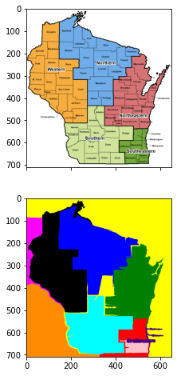
As you can see, the result is reasonable but far from perfect.
For ease of use, we encapsulate the main steps above in sub-routines.
def imgseg_rag(img, compactness=30, n_spixels=400, sigma=0., figsize=(10,10)):
labels1 = segmentation.slic(img,
compactness=compactness,
n_segments=n_spixels,
sigma=sigma,
start_label=0)
out1 = color.label2rgb(labels1, img/255, kind='avg', bg_label=0)
g = graph.rag_mean_color(img, labels1, mode='similarity')
fig, ax = plt.subplots(figsize=figsize)
ax.imshow(out1)
plt.show()
return labels1, g
def imgseg_eig(g):
L = nx.laplacian_matrix(g).toarray()
w, v = LA.eigh(L)
plt.plot(np.sort(w))
plt.show()
return w,v
def imgseg_labels(w, v, n_dims=10, n_segments=5, random_state=0):
top = np.argsort(w)[1:n_dims]
topvecs = v[:,top]
topvals = w[top]
kmeans = KMeans(n_clusters=n_segments,
random_state=random_state).fit(topvecs)
assign_seg = kmeans.labels_
labels2 = assign_seg[labels1]
return labels2
def imgseg_viz(img, labels2, figsize=(20,10)):
out2 = color.label2rgb(labels2, kind='overlay', bg_label=0)
fig, ax = plt.subplots(nrows=2, sharex=True, sharey=True, figsize=figsize)
ax[0].imshow(img)
ax[1].imshow(out2)
plt.show()
Let’s try a more complicated image. This one is taken from here.
img = io.imread('two-badgers.jpg')
fig, ax = plt.subplots(figsize=(10, 10))
ax.imshow(img)
plt.show()
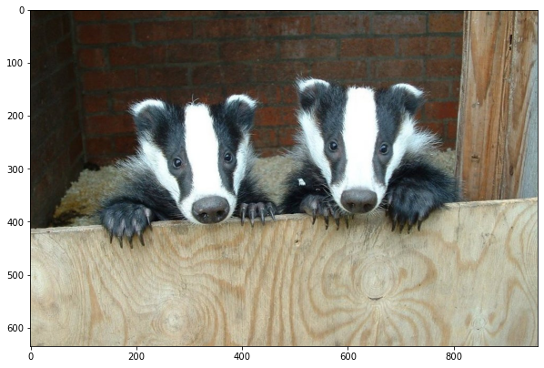
Recall that the choice of parameters requires significant fidgeting.
labels1, g = imgseg_rag(img,
compactness=30,
n_spixels=1000,
sigma=0.,
figsize=(10,10))
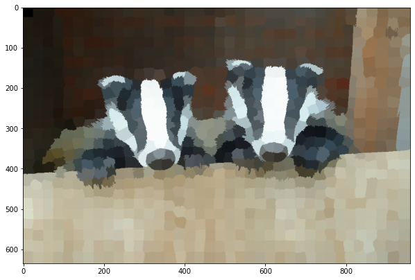
w, v = imgseg_eig(g)
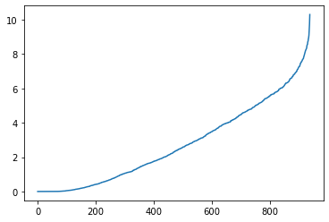
labels2 = imgseg_labels(w, v, n_dims=60, n_segments=50, random_state=535)
imgseg_viz(img,labels2,figsize=(20,10))
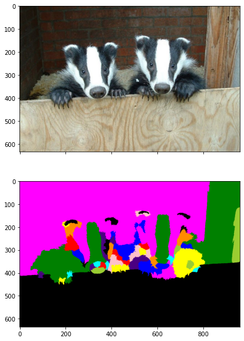
Again, the results are far from perfect - but not unreasonable.
Finally, we return to our medical example. We first reload the image and find super-pixels.
img = io.imread('cell-nuclei.png')
labels1, g = imgseg_rag(img,compactness=40,n_spixels=300,sigma=0.1,figsize=(6,6))
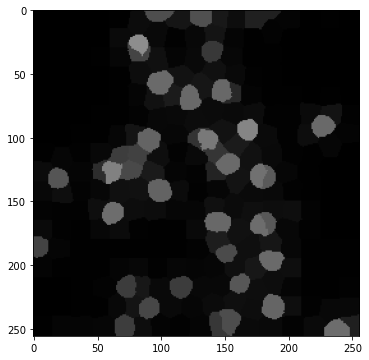
We then form the weighted Laplacian and plot its eigenvalues. This time, about \(40\) dimensions seem appropriate.
w, v = imgseg_eig(g)
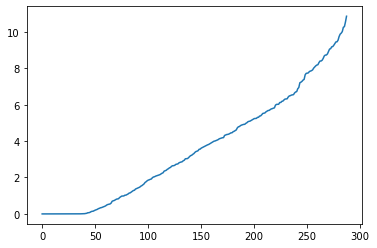
labels2 = imgseg_labels(w, v, n_dims=40, n_segments=30, random_state=535)
imgseg_viz(img,labels2,figsize=(20,10))
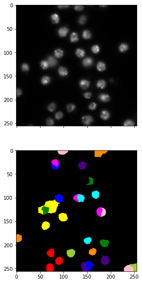
This method is quite finicky. The choice of parameters affects the results significantly. You should see for yourself.
We mention that scikit-image has an implementation of a closely related method, Normalized Cut, skimage.graph.cut_normalized. Rather than performing \(k\)-means after projection, it recursively performs \(2\)-way cuts on the RAG and resulting subgraphs.
We try it next. The results are similar as you can see.
labels2 = graph.cut_normalized(labels1, g)
imgseg_viz(img,labels2,figsize=(20,10))
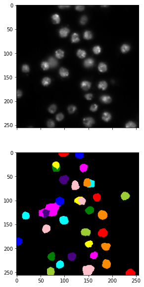
There are many other image segmentation methods. See for example here.